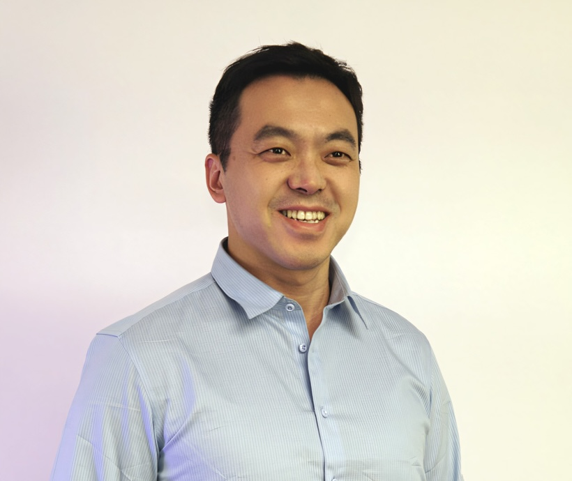
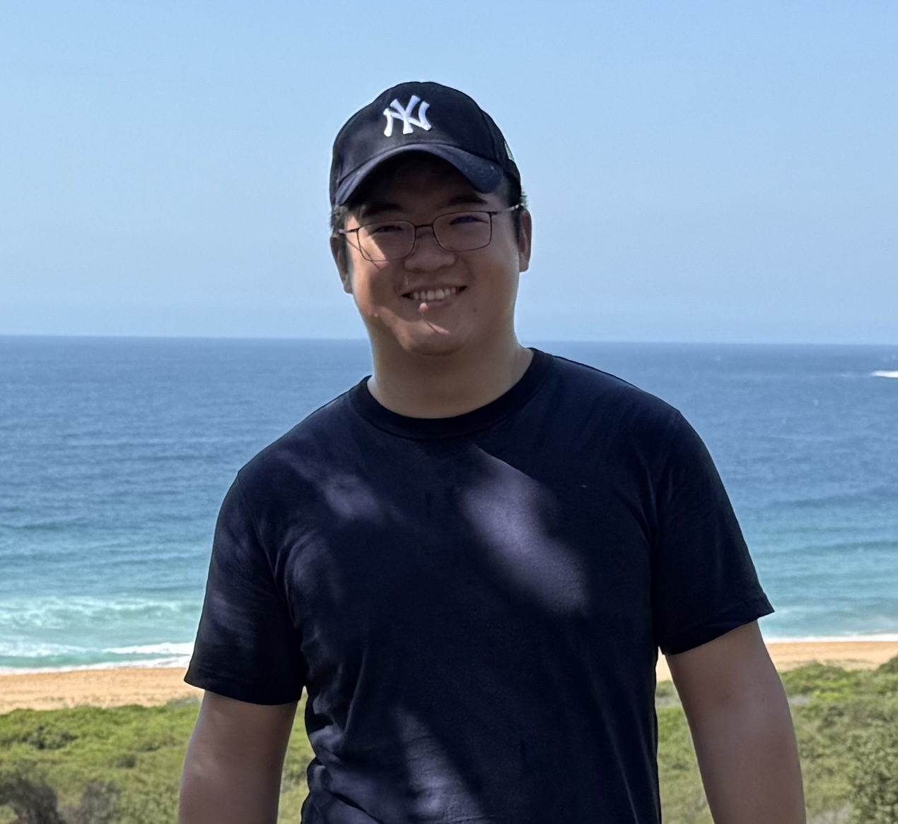
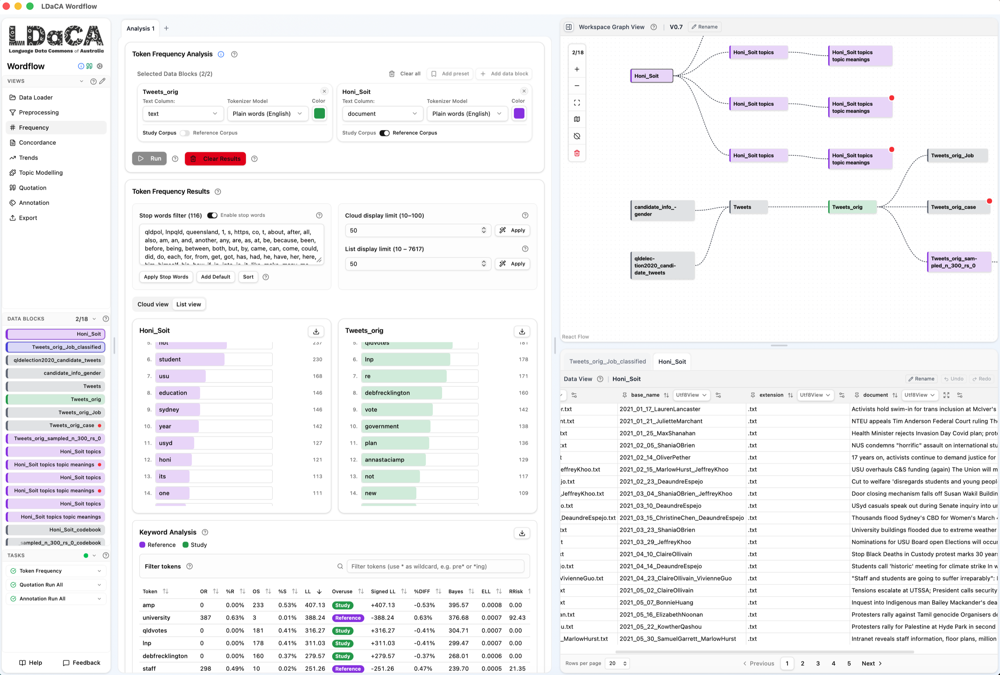
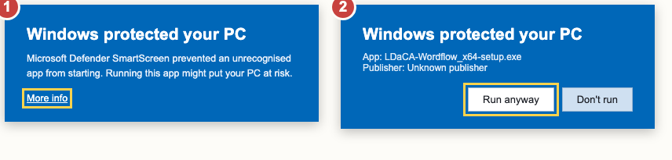

LDaCA Online Workshop · Session 1 of 2
Wordflow: text analytics without code
Concepts, interface, and a real multi-tool research workflow: all demo, no homework
Dr Chao Sun · Dr Alex Guo · Sydney Informatics Hub
Friday 28 August 2026 · Session 1: 11:00 am – 12:30 pm AEST · Session 2 (hands-on): 2:00 – 3:30 pm AEST · (AWST: 9:00 am / 12:00 pm)


Acknowledgement of Country
We acknowledge the Gadigal people of the Eora Nation, the Traditional Custodians of the land from which we present today, and the Traditional Custodians of the many lands from which you are joining.
We pay our respects to Elders past and present.
How today works
- This morning session is being recorded and will be shared afterwards, so you can relax, watch, and revisit anything later. The afternoon hands-on will NOT be recorded.
- No hands-on before lunch. This session is a guided tour: no need to install or follow along. Questions in the Zoom chat any time: our helpers are in this meeting to answer as we go, and I'll pick up the highlights at the pauses.
- 2:00 – 3:30 pm AEST (12:00 – 1:30 pm in WA): the hands-on. Wordflow's new Annotation tool: coding text with GenAI, on your own machine. To join in, you need one thing: the desktop app installed (
sih.tools/wordflow). Model access is provided in the session. Lunch is the install window if you haven't done so. - Been to the June workshop? This morning is new territory anyway: the v0.7 interface throughout, and an afternoon tool that didn't exist then.
Who built this?

Sydney Informatics Hub

Sydney Informatics Hub
Sydney Corpus Lab
All at the University of Sydney, a partner institution of the Language Data Commons of Australia (LDaCA) (DOI: 10.3565/kq2v-9g52), a co-investment partnership with the Australian Research Data Commons (ARDC) through the HASS and Indigenous Research Data Commons. The ARDC is enabled by the Australian Government's National Collaborative Research Infrastructure Strategy (NCRIS).
Why build Wordflow?
Modern text analysis (corpus methods, NLP, and now GenAI) mostly lives in Python and R. For many researchers, learning and maintaining code is a real effort on top of an already busy research schedule.
Wordflow puts those methods behind point-and-click tools: your data stays visible, every step is inspectable, and no code is required.
Text data flows through stackable, single-purpose tools: the meaning of an analysis comes from how you shape your data, not from the tool itself.
That sentence is the whole workshop. Everything you'll see this morning is that idea in motion.
Three ways to use it
Desktop app
Native installer for Mac & Windows (v0.7.x). Everything runs on your machine. Recommended, and what the afternoon hands-on assumes.
Cloud (Binder)
Runs in your browser, nothing to install. Needs an AAF sign-in (Australian university credentials). Don't put sensitive data on it.
Python install
For Python users:pip install ldaca-wordflow
or run directly:uvx ldaca-wordflow@latest
One address to remember: sih.tools/wordflow. Wordflow's home page has the downloads, the run-in-browser option, the documentation, and more about the project.
The interface at a glance

- Tool sidebar (Views): pick a tool; Annotation is the newest
- Tool interface: the selected tool's controls and results, in browser-style tabs
- Workspace Graph View: your data and every block derived from it
- Data View: inspect and manage a block's rows and columns
- Data Blocks: switch the active block quickly
- Tasks: progress of longer-running analyses
- Help & Feedback: built-in tutorials; a direct line to the team
One idea to hold onto
Data blocks are the common currency.
- Your imported dataset is a data block. A filter, a join, an analysis result: each becomes a new block in the workspace graph, ready for any tool to read.
- Every tool is a lens: it reads blocks, and its results can go back into the workspace (click Add to Workspace) to feed the next tool.
- The workspace graph is your method: every step visible, every derivation traceable.
- New in v0.7: analyses run in tabs, like a browser, and tabs are saved with your workspace. Export the workspace as a ZIP and someone else can pick up exactly where you left off. (That's how this afternoon's checkpoint files work.)
The live demo
One workspace, end to end.
Getting around · Preparing data · Frequency · Concordance · Trends · Topic Modelling · Quotation · Export & workspaces
Dense on purpose: the recording doubles as a tutorial, so every click is on film. Questions in the chat: helpers answer as we go, plus two marked pauses.
The running thread
How did the 2020 QLD election candidates talk about jobs: promising to create them, or accusing others of cutting them?
One dataset threads through the whole tour, and this afternoon the same tweets come back when you teach an AI your codebook.
Along the way we split the corpus by gender: not because we expect a big gender story, but because a binary split is the cleanest way to show how corpora are compared and grouped. The same move works with any variable: party, period, region, yours.
Watch, don't follow: full speed, narrated, and every click is on the recording.
Reshape the data,
and the same tool tells a new story.
Every tool is a lens. The interesting question is which lens, on which slice, for what purpose, and that's by your design.
Three takeaways from Wordflow
- Workspace + data block + graph: your project is a tree of derived data.
- Every tool is a lens: the analysis comes from how you shape the data, not from which tool you clicked.
- Tools talk to each other: click-jumps, Add to Workspace, grouping. Stack tools along the flow of text and you've built a workflow: that's Wordflow.
The text flows. The lens changes.
Lunch: back at 2:00 pm AEST (12:00 pm AWST)
This afternoon: hands-on.
Wordflow's new Annotation tool: code (classify) a real dataset with a GenAI model, check its agreement against a reference coding, and improve it. Not recorded; keyboards required.
Set up over lunch, if you haven't already done so from the pre-workshop email (~10 minutes):
- Desktop app (everyone; the only option outside Australia/NZ):
sih.tools/wordflow- macOS: click Open at the downloaded-from-the-internet prompt.
- Windows: More info → Run anyway:

- Browser alternative: Launch in Binder, with an AAF login (Australian and New Zealand institutions).
AI-model access is provided in the session. Not sure how to install? Stay on now for a 15-minute install clinic.
Data acknowledgements
All datasets used today are publicly available, supplied by LDaCA partner organisations. Please cite if used in research.
2025 Australian Federal Election · NewsTalk & Reddit
Supplied by The Digital Observatory at Queensland University of Technology (formerly the Australian Digital Observatory, an ARDC-funded platform).
newstalk.digitalobservatory.net.au · ausreddit.digitalobservatory.net.au · digitalobservatory.net.au
Queensland Election 2020 on Twitter
QUT Digital Observatory with Prof. Axel Bruns, Prof. Daniel Angus, and Tegan Cohen. Gender metadata contributed by Sydney Corpus Lab.
Bruns, A.; Angus, D.; Cohen, T.; QUT Digital Observatory (2022). Queensland Election 2020 on Twitter. QUT. doi.org/10.25912/RDF_1665115527020
Honi Soit Corpus
Sydney Corpus Lab (February 2024). ~60,000 words, 100 news articles from the University of Sydney student newspaper Honi Soit (January 2021 – December 2022). Compiled with permission from the Honi Soit editorial team using constructed-week sampling.